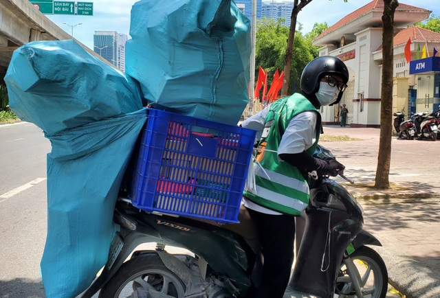

Tin liên Quan
Shipper ở Hà Nội "cháy đơn" đợt nắng nóng, thu nhập không cao như lời đồnNgười vận chuyển" kiếm tiền triệu mỗi ngày giữa mùa dịch
Hà Nội: Đội nắng 40 độ C, shipper làm không hết việc
Tin tức nóng bỏng "Chạy xe nhiều giờ ngoài trời nắng ở Hà Nội, tôi thấy chóng mặt, phải tấp vào lề, lấy nước uống và tạt vào mặt mới tỉnh được..." - anh Hoàng Văn Quân, một shipper chia sẻ.
Đội nắng 40 độ C đi giao hàng
Dịch bệnh Covid-19 đang có những diễn biến phức tạp, người dân Hà Nội đã hạn chế ra đường. Những ngày này, mặc cái nắng như thiêu đốt, anh Hoàng Văn Quân - một người giao hàng (shipper) trú tại Ngọc Thụy (Long Biên, Hà Nội) - vẫn tất bật với công việc đi lại khắp thành phố.
Anh Hoàng Văn Quân chia sẻ: "Từ khi dịch bùng phát trở lại, chúng tôi lại làm không hết việc sau nhiều ngày ế khách. Trung bình, mỗi ngày tôi giao khoảng 30-40 đơn hàng khu vực nội thành Hà Nội. Mỗi đơn hàng, tôi kiếm được từ 15.000-25.000 đồng tùy khoảng cách xa hay gần".

Mỗi ngày anh Quân có thể giao 30-40 đơn hàng trong mùa dịch Covid-19.
Lên đầu trang